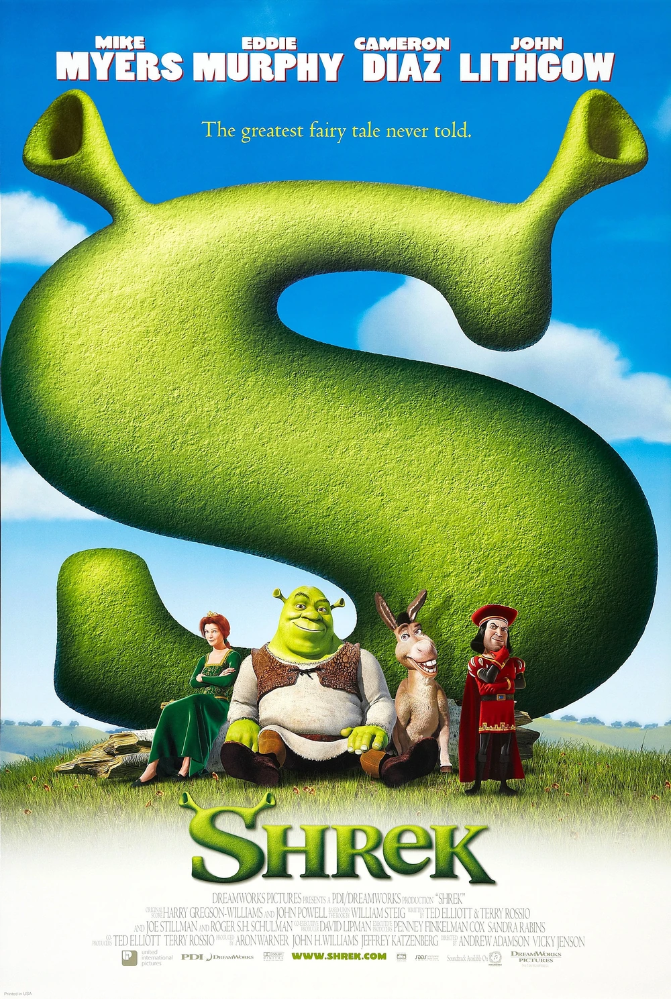

Un ogro llamado Shrek vive en su pantano, pero su preciada soledad se ve súbitamente interrumpida por la invasión de los ruidosos personajes de los cuentos de hadas. Todos fueron expulsados de sus reinos por el malvado Lord Farquaad. Decidido a salvar su hogar, Shrek hace un trato con Farquaad y se prepara para rescatar a la princesa Fiona, quien será la esposa de Farquaad..
Personajes

Shrek
Es un ogro verde que vive en un pantano. Allí reside felizmente, asustando a los humanos que se aventuran o se pierden, hasta que un día descubre que el lugar ha sido invadido por personajes de cuentos de hadas
Ver más
Princesa Fiona
Fue encerrada en un castillo, protegido por Dragona, debido a un hechizo. Lord Farquaad quiere casarse con ella y el encargado de rescatarla es Shrek.
Ver más
Burro
Es un burro parlante que se convierte en el compañero de aventuras de Shrek y se hace su mejor amigo
Ver más
Lord Farquaad
Es un hombre cruel y codicioso que quiere convertirse oficialmente en el Rey de Duloc. Para convertir a Duloc en su propio mundo perfecto, desterró a todas las criaturas de cuento de hadas,t
Ver más